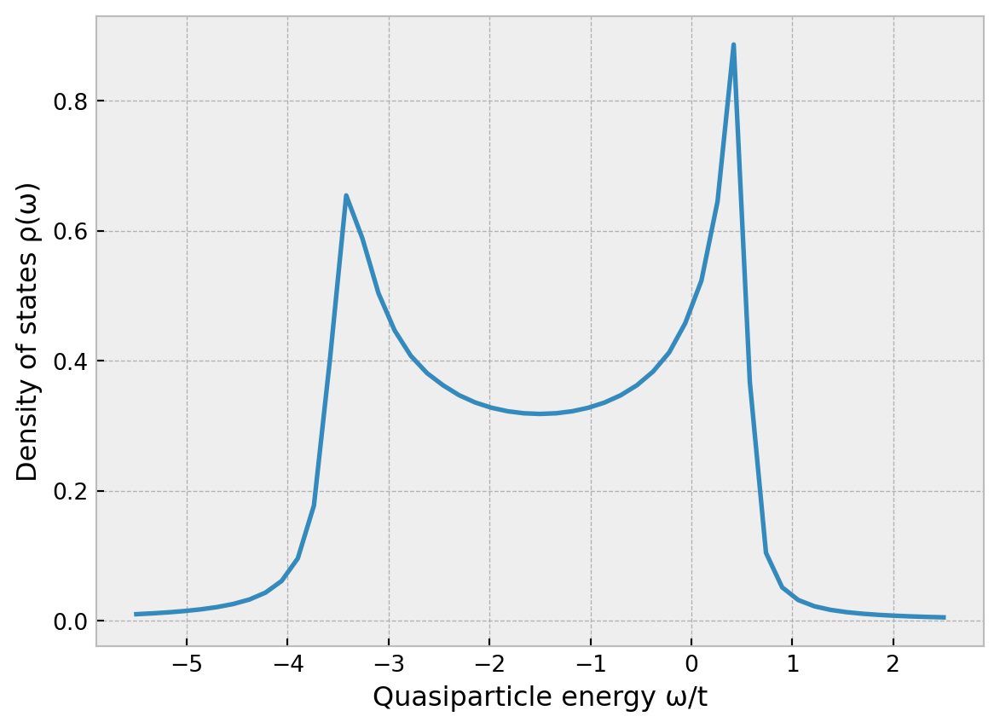
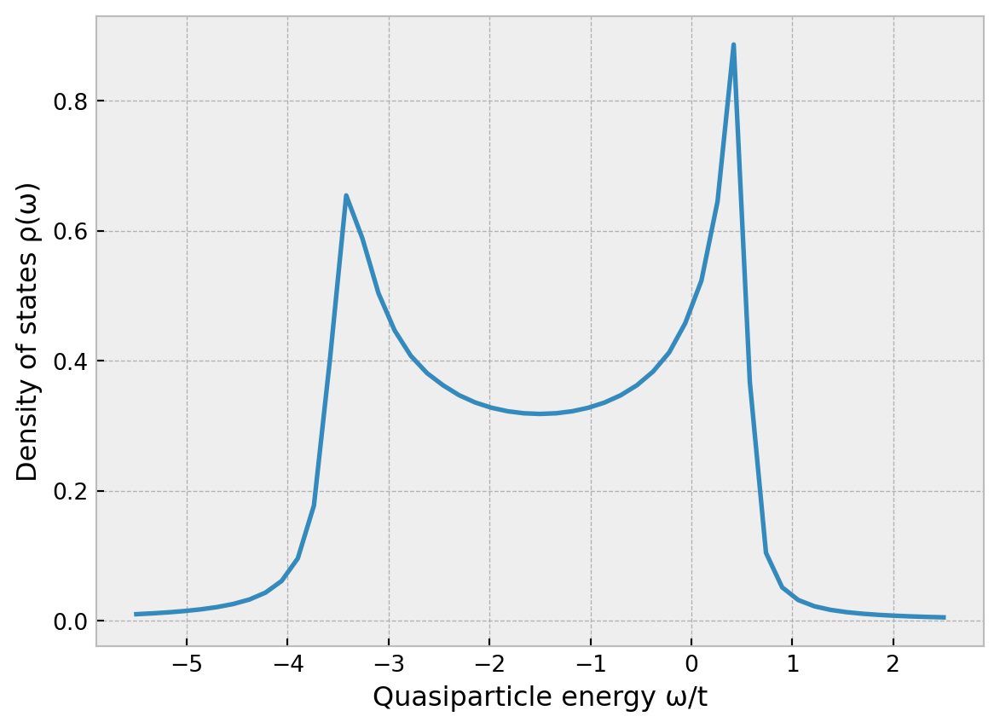
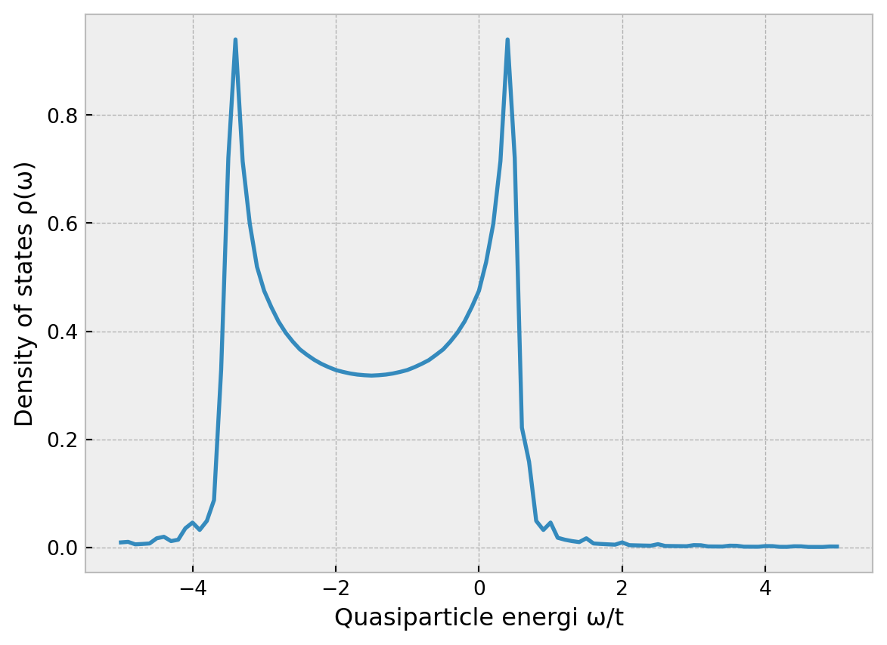
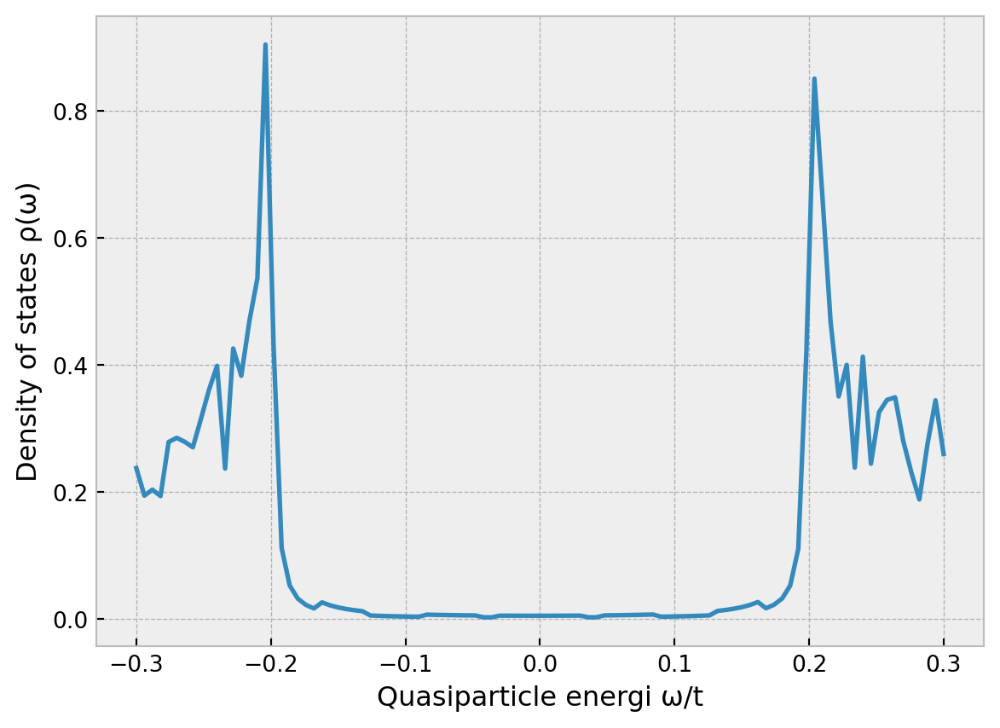

Code
import pandas as pd
import seaborn as sns
import matplotlib.pyplot as plt
plt.style.use("bmh")
df = pd.read_csv("misc/benchmark.csv")
sns.lineplot(df, x="Atoms", y="Seconds", hue="Package")
plt.xscale("log")
plt.yscale("log")
July 9, 2024
Bodge is a Python package for constructing large real-space tight-binding models. Although quite general tight-binding models can be constructed, we focus on the Bogoliubov-DeGennes (“BoDGe”) Hamiltonian, which is used to model superconductivity in clean materials. So if you want a lattice model for superconducting nanostructures, and want something that is efficient yet easy to use, then you’ve come to the right place.
Bodge has been uploaded to the Python Package Index (PyPI). This means that if you have a recent version of Python and Pip installed on your system, installing this package should be as simple as:
pip install bodgeFor more installation alternatives, please see the README on GitHub.
The next two sections below discusses in some detail how Bodge has been designed and implemented. If you just want to use the package, feel free to skip directly to the section Getting started below.
In condensed matter physics, one usually writes the Hamiltonian operator \(\mathcal{H}\) of some physical system in the language of quantum field theory. To describe electrons living in a crystal lattice (e.g. a metal), the basic building blocks we need are an operator \(c_{i\sigma}^\dagger\) that “puts” an electron with spin \(\sigma \in \{\uparrow, \downarrow\}\) at a lattice site described by some index \(i\), and another operator \(c_{i\sigma}\) that “removes” a corresponding electron from that site. One can describe many physical phenomena in this way. For instance, a product \(c^\dagger_{1,\uparrow} c_{2,\downarrow}^{\phantom{\dagger}}\) of two such operators would remove a spin-down electron from site \(2\) and place a spin-up electron at site \(1\): this models an electron that jumps between two lattice sites while flipping its spin. After summing many terms like this, the Hamiltonian operator \(\mathcal{H}\) will contain a complete description of the permitted processes in our model – which can then be used to determine the system’s ground state, order parameters, electric currents, and other properties of interest.
We here focus on systems that can harbor superconductivity, which is often modeled using variants of the “Bogoliubov-deGennes Hamiltonian”. In a very general form, such a Hamiltonian operator can be written: \[\mathcal{H} = E_0 + \frac{1}{2} \sum_{ij} \hat{c}^\dagger_i \hat{H}_{ij} \hat{c}_j,\] where \(\hat{c}_i = (c_{i\uparrow}, c_{i\downarrow}, c_{i\uparrow}^\dagger, c_{i\downarrow}^\dagger)\) is a vector of all spin-dependent electron operators on lattice site \(i\). \(E_0\) is a constant that can often be neglected, but can be important if you need to self-consistently determine any order parameters. The \(4\times4\) matrices \(\hat{H}_{ij}\) can be further decomposed into \(2\times2\) blocks \(H_{ij}\) and \(\Delta_{ij}\): \[\hat{H}_{ij} = \begin{pmatrix} H_{ij} & \Delta_{ij} \\ \Delta^\dagger_{ij} & -H^*_{ij} \end{pmatrix}.\] Physically, the matrices \(\{ H_{ij} \}\) describe all the non-superconducting properties of the system. A typical example of a non-magnetic system – and what some people might call the tight-binding model – would be: \[H_{ij} = \begin{cases} -\mu\sigma_0 & \text{if $i = j$,} \\ -t\sigma_0 & \text{if $i, j$ are neighbors,} \\ 0 & \text{otherwise.} \end{cases}\] Here, \(\sigma_0\) is a \(2\times2\) identity matrix, signifying that the Hamiltonian has no spin structure and therefore no magnetic properties. The constant \(\mu\) is the chemical potential and provides a contribution to the Hamiltonian for every electron that is present regardless of lattice site, while the constant \(t\) is the hopping amplitude which parametrizes how easily the electrons jump between neighboring lattice sites. In magnetic systems, one can use the Pauli vector \(\boldsymbol{\sigma} = (\sigma_1, \sigma_2, \sigma_3)\) in on-site terms (first row) to model ferromagnets and antiferromagnets, or in nearest-neighbor terms (second row) to model altermagnets and spin-orbit coupling. Moreover, in the example above we have considered a homogeneous system – basically, one uniform chunk of metal. But once can easily make \(H_{ij}\) a function of the exact values of \(i\) and \(j\), in which case one can model inhomogeneous systems where e.g. a magnetic field only appears in one half of the system.
In the context of this library, the other matrices \(\{ \Delta_{ij} \}\) are particularly interesting: These represent electron-electron pairing and are used to model superconductivity. The simplest is the conventional Bardeen–Cooper–Schrieffer (BCS) superconductivity, also known as “\(s\)-wave spin-singlet superconductivity”. This can be modeled using an on-site pairing: \[\Delta_{ij} = \begin{cases} -\Delta_s i\sigma_2 & \text{if $i = j$,} \\ 0 & \text{otherwise.} \end{cases}\] But the same formalism can be used to model other types of “unconventional” superconductivity. For instance, the \(d\)-wave superconductivity that is common in “high-temperature superconductors” can be described by the expression \[\Delta_{ij} = \begin{cases} -\Delta_d i\sigma_2 & \text{if $i$ and $j$ are neighbors along the $x$ axis,} \\ +\Delta_d i\sigma_2 & \text{if $i$ and $j$ are neighbors along the $y$ axis,} \\ 0 & \text{otherwise.} \end{cases}\]
Thus, we have motivated that the formalism above is able to describe a quite general condensed-matter systems including superconductors. For more information, many books have been written on this topic, and e.g. the textbook Bogoliubov-de Gennes method and its applications might be a good place to start.
The Bodge package essentially provides an interface that lets you directly set the elements of \(H_{ij}\) and \(\Delta_{ij}\) discussed above via a Pythonic interface (specifically, a context manager). You don’t have to manually specify \(\Delta^\dagger_{ij}\) and \(-H^*_{ij}\), since these are fixed by Hermitian and particle-hole symmetries. The main output is then a \(4N \times 4N\) matrix of the form \[\check{H} = \begin{pmatrix} \hat{H}_{11} & \cdots & \hat{H}_{1N} \\ \vdots & \ddots & \vdots \\ \hat{H}_{N1} & \cdots & \hat{H}_{NN} \end{pmatrix},\] where \(N\) is the total number of lattice sites in the system. Since the eigenvalues and eigenvectors of this matrix are directly related to those of the original operator \(\mathcal{H}\), we can without loss of generality use this matrix as its substitute when we want to make predictions about a physical system.
One of the main goals of Bodge is that it should be fast, and scale well even to very large systems (i.e. even for millions of lattice sites). In practice, this is achieved using sparse matrices internally. This is important because most tight-binding models result in extremely sparse Hamiltonians.
For instance, consider a 2D square lattice with side lengths \(L\), which has in total \(N = L \times L\) lattice sites. The Hamiltonian matrix \(\check{H}\) of this system contains \(\mathcal{O}(N^2)\) elements. However, there are only \(N\) on-site terms and \(4N\) nearest-neighbor terms, resulting in only \(\mathcal{O}(N)\) non-zero elements in this matrix. Thus, the proportion of non-zero elements in the matrix scales as \(\mathcal{O}(1/N)\), resulting in a huge waste of CPU and RAM for large \(N\). If we use sparse matrices, then only the non-zero elements are actually stored in memory and used in e.g. matrix multiplications, thus providing an \(\mathcal{O}(N)\) improvement of many matrix algorithms. Internally, Bodge represents the Hamiltonian matrix as a scipy.sparse.bsr_matrix with block size 4, since we know that the \(4N \times 4N\) Hamiltonian is constructed from \(4\times4\) matrix blocks. Methods are however provided to convert this into either an numpy.array (dense matrix) or other relevant scipy.sparse matrix format.
Below, I show some results generated using misc/benchmark.py. This benchmark essentially constructs a non-trivial sparse Hamiltonian matrix for a superconducting system with \(N\) atomic sites using both Bodge and Kwant. The latter is basically the state of the art when it comes to numerical calculations in condensed matter physics and therefore a reasonable benchmark. As you can see, both libraries construct the Hamiltonian in \(\mathcal{O}(N)\) time, in contrast to the \(\mathcal{O}(N^2)\) time one might have expected if one used dense matrices.

On my machine, both libraries can construct a 2D Hamiltonian with one million lattice sites in roughly two minutes. For comparison: To construct this Hamiltonian using dense matrices (NumPy arrays), we would have needed to store \(4N \times 4N\) complex doubles, which would require minimum 256 TB of RAM… Whereas only \((N+4N)(4\times4)\) complex doubles are required for the sparse representation, requiring a bit more than 1 GB of RAM.
Note that Bodge assumes that we are only interested in on-site and nearest-neighbor interactions. This is the most common use case, and constrains the sparsity structure of the resulting Hamiltonian.
I believe the easiest way to get started is “learning by doing”, so let’s have a look at some examples of how one can use Bodge in practice. For more advanced usage, I would recommend looking through the source code itself, which is documented in the form of docstrings and comments.
Let us start with a simple case: Calculating the local density of states (LDOS) in the middle of a long normal-metal wire. Such a wire can be considered as an \(L_x \times L_y \times L_z\) cubic lattice where \(L_x \gg L_y = L_z = 1\). A normal metal is generally modeled as having only a chemical potential \(\mu\) and a hopping amplitude \(t.\) The following code performs the required calculations:
import numpy as np
import matplotlib.pyplot as plt
from bodge import *
# Model parameters
Lx = 512
Ly = 1
Lz = 1
t = 1
μ = 1.5 * t
# Construct the Hamiltonian
lattice = CubicLattice((Lx, Ly, Lz))
system = Hamiltonian(lattice)
with system as (H, _):
for i in lattice.sites():
H[i, i] = -μ * σ0
for i, j in lattice.bonds():
H[i, j] = -t * σ0
# Calculate the central density of states.
i = (Lx//2, Ly//2, Lz//2)
ω = np.linspace(-5 * t, 5 * t, 101)
ρ = system.ldos(i, ω)
# Plot the density of states at the system center.
plt.figure()
plt.xlabel("Quasiparticle energi ω/t")
plt.ylabel("Density of states ρ(ω)")
plt.plot(ω, ρ)
Some things I want to elaborate on regarding this example:
H[i, j] in the Hamiltonian. So every time you want to update the Hamiltonian, you write a with system as ...: block, after which you can pretend that H[i, j] simply indexes a large Hamiltonian matrix. Once you exit the with block, Bodge takes care of the gory details: Transferring the terms in the Hamiltonian to the underlying sparse matrix, ensuring that Hermitian and particle-hole symmetries are satisfied, and complaining loudly if the Hamiltonian is non-Hermitian.H[i, j] = ... must be a \(2\times2\) complex matrix, which is most easily done by multiplying coefficients with an identity matrix σ0, a Pauli matrix σ1, σ2, σ3, or their complex equivalents jσ0 = 1j * σ0 etc. These symbols are automatically imported when you do from bodge import *. I like to code using Greek letters to keep the notation as close to a physics paper as possible, and typing Greek letters is usually straight-forward.1 But if you don’t want to code using Unicode symbols, that is completely fine as well: Bodge doesn’t require Unicode anywhere. Every object exported by the library has an ASCII version, so you can e.g. type sigma0 and jsigma2 instead of σ0 and jσ2 if you prefer that.lattice.sites() and lattice.bonds() to iterate over the whole lattice. In this case, we have kept it simple, and only have one type of on-site term and one type of hopping term, but Bodge itself is very flexible. You can e.g. use lattice.bonds(axis=0) to iterate over only bonds that point along the 0th axis (x axis), which is useful if you need different hopping terms in different directions. Moreover, each coordinate i above is simply a tuple (x_i, y_i, z_i) where \(0 \leq x_i < L_x\) and so on. Thus, you can easily use some if tests on these coordinates to implement interfaces between different materials, or a function like np.cos(ν * i[0]) to implement magnetic textures, etc.Hamiltonian object must be instantiated on a Lattice object. Currently, only one lattice is implemented, namely the CubicLattice illustrated above. However, Bodge itself is designed to be completely independent of the lattice structure, and can easily be used with say a triangular or hexagonal lattice if you want: To do this, you only need to define your own subclass of Lattice where you implement methods .sites() and .bonds() that can be used to iterate over all the atomic sites and nearest-neighbor bonds in the lattice. The best way to learn how to do this, is to look at the CubicLattice code.system.ldos method implements an efficient sparse matrix algorithm to obtain the local density of states at only a single site \(i\) – in this case, the center of the system. The algorithm implemented is explained in detail in Appendix A of this paper, and is essentially a simplified version of the algorithm from this paper.E, X = system.diagonalize(), and then use the eigenvalues E[n] and corresponding eigenvectors X[n,:,:] to obtain the density of states. This method uses dense matrices (NumPy arrays), and is significantly slower for large systems.Let’s consider a small two-dimensional superconductor: Specifically, a \(32\times32\) atom \(s\)-wave singlet superconductor.
import numpy as np
import matplotlib.pyplot as plt
from bodge import *
# Model parameters
Lx = 101
Ly = 101
t = 1
μ = -3 * t
Δs = 0.2 * t
# Construct the Hamiltonian
lattice = CubicLattice((Lx, Ly, 1))
system = Hamiltonian(lattice)
with system as (H, Δ):
for i in lattice.sites():
H[i, i] = -μ * σ0
Δ[i, i] = -Δs * jσ2
for i, j in lattice.bonds():
H[i, j] = -t * σ0
# Calculate the central density of states for energies near the gap.
i = (Lx//2, Ly//2, 0)
ω = np.linspace(-1.5 * Δs, 1.5 * Δs, 101)
ρ = system.ldos(i, ω)
# Plot the density of states at the system center.
plt.plot(ω, ρ)
plt.xlabel("Quasiparticle energi ω/t")
plt.ylabel("Density of states ρ(ω)")Text(0, 0.5, 'Density of states ρ(ω)')
E, v = system.diagonalize()
This section is still under construction.
All the examples above assume that we have a rectangular lattice, i.e. that the lattice is an instance of CubicLattice. However, this is not required to use Bodge itself, it is just the only lattice type implemented so far. If you wish to study other lattices – e.g. triangular or hexagonal lattices – the only thing you need to do is to create a subclass of Lattice, where you implement your own methods .sites(), .bonds(), and .edges() which can be used to iterate through your custom lattice.
This section is still under construction.
Examples: Vim has built-in “digraphs” where you can press <C-k>s* in insert mode to type σ. Emacs has a built-in “TeX input method”, which means that after pressing C-\ you can type \sigma to insert the symbol σ. Most other editors code have third-party plugins for this, e.g. Unicode Latex for VSCode. Another option is to use an OS-wide snippet expander (e.g. TextExpander), which you can setup to e.g. convert ;s to σ in any application. There are many alternatives!↩︎